License
Content provided under a Creative Commons Attribution license, CC-BY 4.0. (c) 2014 L.Barba, P.Bardet, A.Wickenheiser (The George Washington University). Thanks: A. Ahmadia, G. Forsyth, A. Golding. LAB thanks NSF for support via CAREER award #1149784.
Contents
- JIT Module 1, Lesson 1
- Lesson 1 builds competency on these basic skills:
- Context - Earth temperature over time
- Step 1: Read a data file
- Step 2: Plot the data
- Step 3: Smooth the data and do regression
- Step 4: Correcting for auto correlation
- Step 5: Generating useful output
- Dig Deeper & Think
- What did we learn?
JIT Module 1, Lesson 1
This is lesson 1 of the first Just-in-Time (JIT) module for teaching computing to engineers, in context. The first module lays the foundations for building computational skills. It is not meant to support a particular engineering course, so it can be used by freshman students. The context problems should be interesting to any science-minded student.
Lesson 1 builds competency on these basic skills:
- reading data from a file in comma-separated format (CSV)
- plotting data
- analyzing data with statistics
- writing an image of a plot to a file
Context - Earth temperature over time
Is global temperature rising? How much? This is a question of burning importance in today's world!
Data about global temperatures are available from several sources: NASA, the National Climatic Data Center (NCDC) and the University of East Anglia in the UK. Check out the University Corporation for Atmospheric Research (UCAR) for an in-depth discussion. The NASA Goddard Space Flight Center is one of our sources of global climate data. They produced this video showing a color map of the changing global surface temperature anomalies from 1880 to 2011.
The term global temperature anomaly means the difference in temperature with respect to a reference value or a long-term average. It is a very useful way of looking at the problem and in many ways better than absolute temperature. For example, a winter month may be colder than average in Washington DC, and also in Miami, but the absolute temperatures will be different in both places.
Step 1: Read a data file
The data is contained in the file:
GlobalTemperatureAnomaly-1958-2008.csv
with the year on the first column and 12 monthly averages of temperature anomaly listed sequentially on the second column. We will read the file, then make an initial plot to see what it looks like.
To load the file, we use a function called csvread(). This is how it works:
csvread('../resources/GlobalTemperatureAnomaly-1958-2008.csv');
Note that we called the function with only the file path. csvread works out the rest for us. It's important to note that this function will only work when used on purely numeric data.
As the output of the function, we get an array. It's rather big, and we probably don't want to look at it directly. As such, we've suppressed the output. To do this, we add a semicolon to the end of the function call. Later, we'll want to work with this data , so we'll assign it to the variable T.
T=csvread('../resources/GlobalTemperatureAnomaly-1958-2008.csv');
That's interesting. Now, we don't see any output from the function call. Why? We've added a semicolon to the end of the expression, which suppresses the output in MATLAB. To show the output, we can leave off the semicolon, type in the name of the variable, or use a display() command. We could also look at it in the array viewer. To do this, find the variable name in the "Workspace" section of your MATLAB window, and double click it. This lets us scroll through the data in an intuitive way to better visualize its significance. The screenshot below shows where you can find the array.

Let's find out how big the array is. For that, we use a cool function called size():
size(T)
ans = 612 2
The array T holding our temperature data has two columns and 612 rows. Since we said we had monthly data, how many years is that?
612/12
ans =
51
That's right: from 1958 through 2008.
We'll be using these two columns of data a lot. To reference a column of data, you can use the syntax array(:,column number). The general scheme in matlab is that the first part, the :, references the rows. Using a semicolon here means "all rows." The second part, the column number, selects a column. Using the array viewer, we can see that the first column, 1, contains the year data, while the second column contains the anomalies. You can remember that it's rows, then columns by just thinking about RC, like remote control. MATLAB is sort of like remote control for your computer, right?
Lets save our columns of data with variable names that make sense.
Temp = T(:,2); year = T(:,1);
Step 2: Plot the data
We will display the data in two ways: as a time series of the monthly temperature anomalies versus time, and as a histogram. To be fancy, we'll put both plots in one figure.
Plotting the time series of temperature is as easy as calling the function plot(). If we write figure above a call to plot, then we'll get a new figure, which is really nice if you have a lot of outputs you want to look at.
Remember the shape of T? It has two columns and the temperature values are in the second column. We extract the values of the second column by specifying 2 as the second index (the first column has index 1) and using the colon notation : to mean all rows. Check it out:
figure plot(Temp)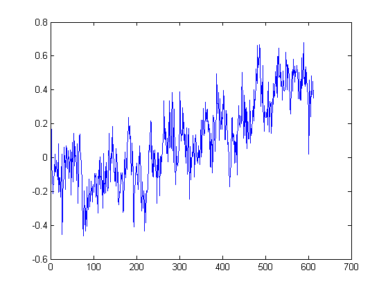
Do you see a trend in the data?
The plot above is certainly useful, but wouldn't it be nicer if we could look at the data relative to the year, instead of the location of the data in the array?
The plot function can some more inputs; check out the link above to Mathwork's help document. If you ever want to know more about a function, try typing help(function) or doc(function). You can also use the help interactively, or search the Mathwork's website. Let's pretty our plot up a bit
figure plot(year,Temp) title('Temperature Anomaly 1958-2008') xlabel('Year') ylabel('Anomaly')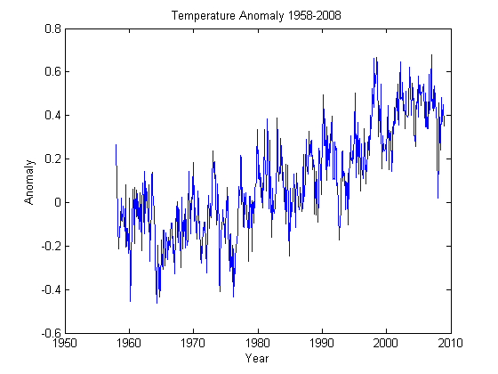
The temperature anomaly certainly seems to show an increasing trend. But we're not going to stop there, of course. It's not that easy to convince people that the planet is warming, as you know.
Plotting a histogram, to show how often a the anomaly falls within some range function hist(). Why should it be any harder?
figure hist(Temp)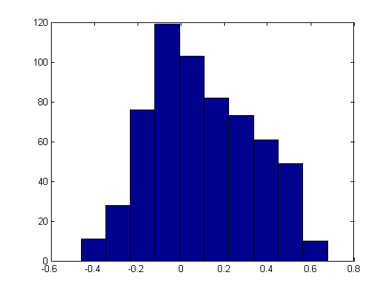
What does this plot tell you about the data? It's more interesting than just an increasing trend, that's for sure. You might want to look at more statistics now: mean, median, standard deviation. Use the help function to figure out how to do this. You should get:
- mean of 0.0998
- median of 0.0736
- standard deviation of 0.2395
You can control several parameters of the hist() plot. Learn more by reading the manual page (yes, you have to read the manual sometimes!). You can change a lot of the characteristics of the plot, like the color, the number of bins to look into, where those bins are located, and a lot of other things. To change the color of the bars, we need to do something a little trickier. Don't worry about the specifics just yet, we'll get there. Just know that this is a way to change the face color and background color of the histogram plot. To help you follow the flow here, we've added some comments. In MATLAB, these follow the % symbol. Try some other things out; it's really customizable.
figure %create a new figure [frequency,values]= hist(Temp); %get histogram data from (T):,2)) %the above command saves the _frequency_, or how often, each "bin" in the %histogram matches the data. "The values" array saves the actual locations %of the bins. bar(values, frequency,'FaceColor','g','EdgeColor','w') %create a bar plot %The bar plot above replaces the original histogram we used, because it is %a lot easier to change colors and, generally, make the plot nicer looking. %We use the values and frequency arrays we made with the hist function as %the data for the plot. title('Anomaly Histogram') xlabel('Anomaly') ylabel('Frequency')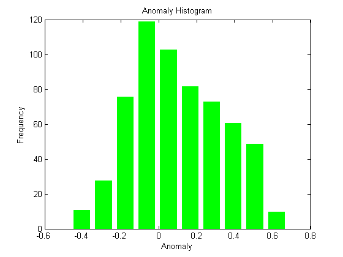
This is fun. Finally, we'll put both plots on the same figure using the subplot() function, which creates a grid of plots. The arguments tell this function how many rows and columns of sub-plots we want, and where in the grid each plot will go.
To help you see what each plotting command is doing, we added comments, which in MATLAB follow the % symbol.
figure % create new figure subplot(1,2,1) %activate first subplot, a 1x2 selection plot(year,Temp,'color','g')%plot the lineplot in green title('Temperature Anomaly 1958-2008') xlabel('Year') ylabel('Anomaly') subplot(1,2,2)%activate the second subplot [frequency,values] = hist(Temp);%get histogram data from (T):,2)) bar(values, frequency,'FaceColor','g','EdgeColor','w')%create a bar plot title('Anomaly Histogram') xlabel('Anomaly') ylabel('Frequency')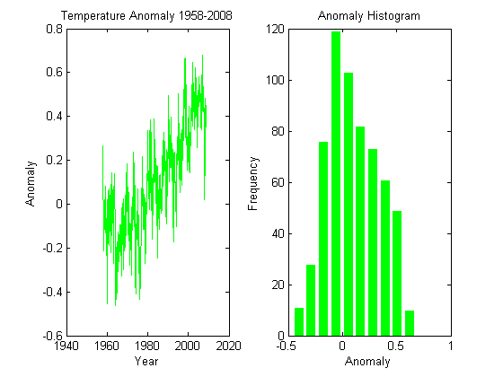
Step 3: Smooth the data and do regression
You see a lot of fluctuations on the time series, so you might be asking yourself how to smooth it. No? Let's do it anyway.
One possible approach to smooth the data (there are others) is using a moving average, also known as a sliding-window average. This is defined as:
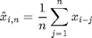
The only parameter to the moving average is the value 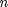. As you can see, the moving average smooths the set of data points by creating a new data set consisting of local averages (of the previous data points) at each point in the new set.
A moving average is technically a convolution;Luckily, MATLAB has a built-in function for that, `filter()` . We use it like this:
figure n = 12; %window size of 12 months b = ones(1,n)/n; %this is the 1/n part of our running average TMA = filter(b, 1, Temp); % the filter command does a convolution for us plot(year,TMA,'color','g') %plot our convolution! title('Running Average') xlabel('Year') ylabel('Anomaly')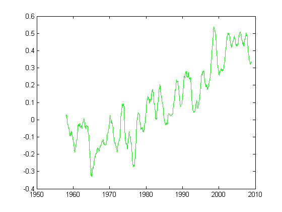
We use a window of 12 data points, meaning that the plot shows the average temperature over the last 12 months. Looking at the plot, we can still see a trend, but the range of values is smaller. Let's plot the original time series together with the smoothed version; you should edit the code below so that the plot of the Time Moving average is red with a linewidth of 3. Use the help documentation to figure it out!
figure hold on %using the hold command lets us plot something new on the same plot plot(year,Temp,'color','g') plot(year,TMA,'color','g') title('Temperature Anomaly with Running Average') xlabel('Year') ylabel('Anomaly')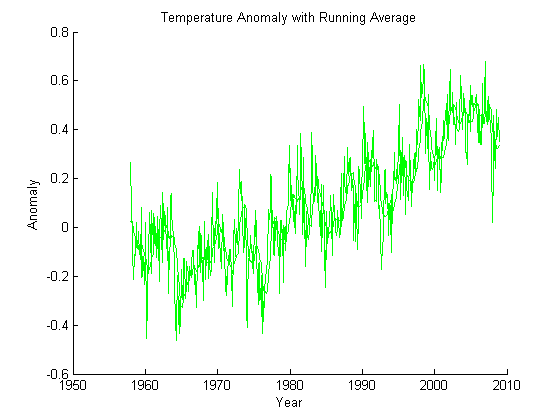
That is interesting! The smoothed data follows the trend nicely but has much less noise. Well, that is what filtering data is all about.
Let's now fit a straight line through the temperature data, to see the trends. We would need to perform a least-squares linear regression to find the slope and intercept of a line
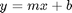
that fits our data. Thankfully, MATLAB is here to help with the polyfit() function. The function takes three arguments: the two array variables 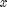 and  , and the order of the polynomial for the fit (in this case, 1 for linear regression).
, and the order of the polynomial for the fit (in this case, 1 for linear regression).
coefficients = polyfit(year,Temp,1); %polyfit returns coefficients figure hold on %we'll be using more than one plot plot(year,Temp,'color','g'); plot(year,polyval(coefficients,year),'--','linewidth',2); % the polyval function takes an array of coefficients(from polyfit, in our % case), and a number of x-values to create the y-values of the function % described by those coefficients. use the doc command to find out more. title('Temperature Anomaly Fit Line') xlabel('Year') ylabel('Anomaly') axis([1958 2008 -.6 .8]) %this changes the axes of our plot to frame the data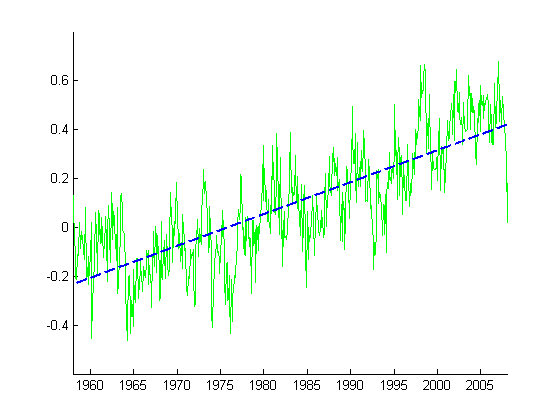
Step 4: Correcting for auto correlation
We won't go into details, but you will learn more about all this if you take a course on experimental methods --for example, at GW, the Mechanical and Aerospace Engineering department offers "_Methods of Engineering Experimentation_"(MAE-3120).
The fact is that in time series (like global temperatures, stock values, etc.), the fluctuations in the data are not random: adjacent data points are not independent. We say that there is auto-correlation in the data.
The problem with auto-correlation is that various techniques in statistical analysis rely on the assumption that scatter(or error) is random. If you apply these techniques willy-nilly, you can get false trends, overestimate uncertaintis, or exaggerate the goodness of a fit. All bad things!
For the global temperature anomaly, this discussion is crucial: many critics claim that since there is auto-correlation in the data, no reliable trends can be obtained!
As a well-educated engineering student who cares about the planet, you will appreciate this: we can estimate the trend for the global temperature anomalies taking into account that the data points are not independent.
Step 5: Generating useful output
Unfortunately, many times, simply showing your code won't be enough; we'll need to have the code generate something more immediately useful. Here, we'll use our linear fit curve to project the temperature in the future. We'll also save some image files that we could, potentially, drop into a document or report based on our findings. First, let's create an expectation of the temperature anomaly up to the year 2100.
spacing = (2008-1958)/612; length = (2100-1958)/spacing; length = int8(length); %ensure length is an integer for the linear spacing years = linspace(1958,2100,length); est = polyval(coefficients,years); figure plot(years,est,'--','linewidth',2) title('Temperature Estimate') xlabel('Year') ylabel('Anomaly') axis([1958, 2100,-.5 ,2]) out = [years;est].';%transpose the matrix to match our input file % we need to transpose the matrix because, by default, the data was saved % in rows. The data that we originally imported was in columns, so we're % going to match that format.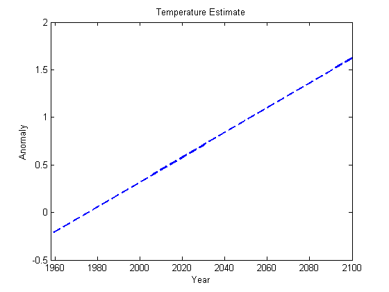
Ok, that estimation looks reasonable. Let's save the x and y values of a the estimation that we just created.
csvwrite('../resources/GlobalTemperatureEstimate-1958-2100.csv', out)
Now, lets make a nicer picture that we can show to back up some of our information. We can plot the linear regression as well as the original data and then save it as an image.
outplot = figure; % we need to be able to reference our figure! %Here, we're naming our figure to the name outplot so we can tell the %computer what to save. hold on plot(year,Temp,'color','g'); plot(years,est,'--','linewidth',2); title('Temperature Anomaly and Prediction') xlabel('Year') ylabel('Anomaly') print(outplot,'../resources/GlobalTempPlot.png') %this statement saves a picture %The first argument here, "outplot" tells the code what variable to save: %our picture, while the second argument is the relative file path to save %to.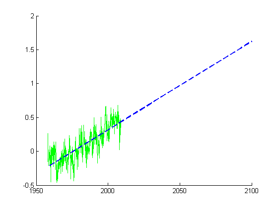
Nice! Now weve got some stuff that we could use in a report, or show to someone unfamiliar with coding. Remember to play with the code above; I'm sure you could get some really nice plots with a little bit more effort!
Dig Deeper & Think
- How is the global temperature anomaly calculated?
- What does it mean and why is it employed instead of the global mean temperature to quantify global warming?
- Why is it important to check that the residuals are independent and random when performing linear regression?
- In this particular case, is it possible to still estimate a trend with confidence?
- What is your best estimate of the global temperature by the end of the 22nd century?
What did we learn?
You should have played around with the code in this document as you write your own version of the code in a seperate matlab script to learn:
- how to read data from a comma-seperated value file
- how to plot data
- how to do some basic analysis on data
- how to write to a file